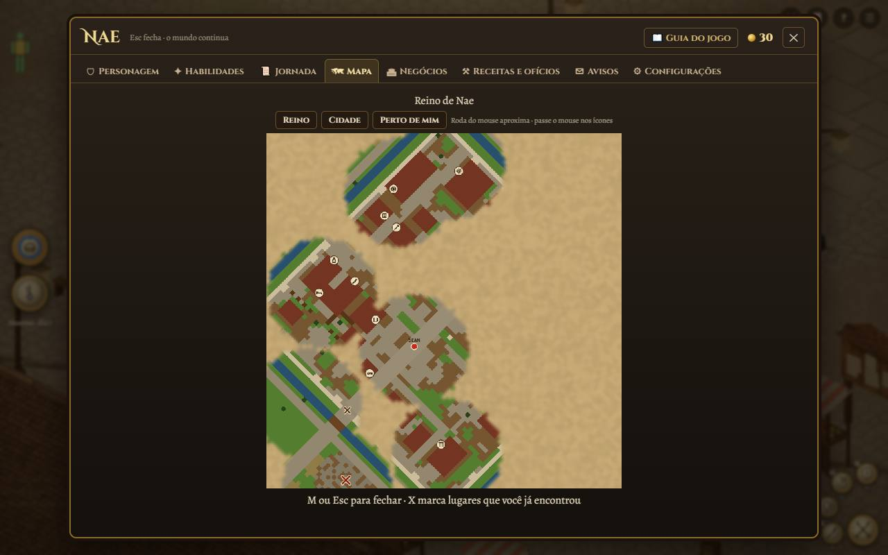
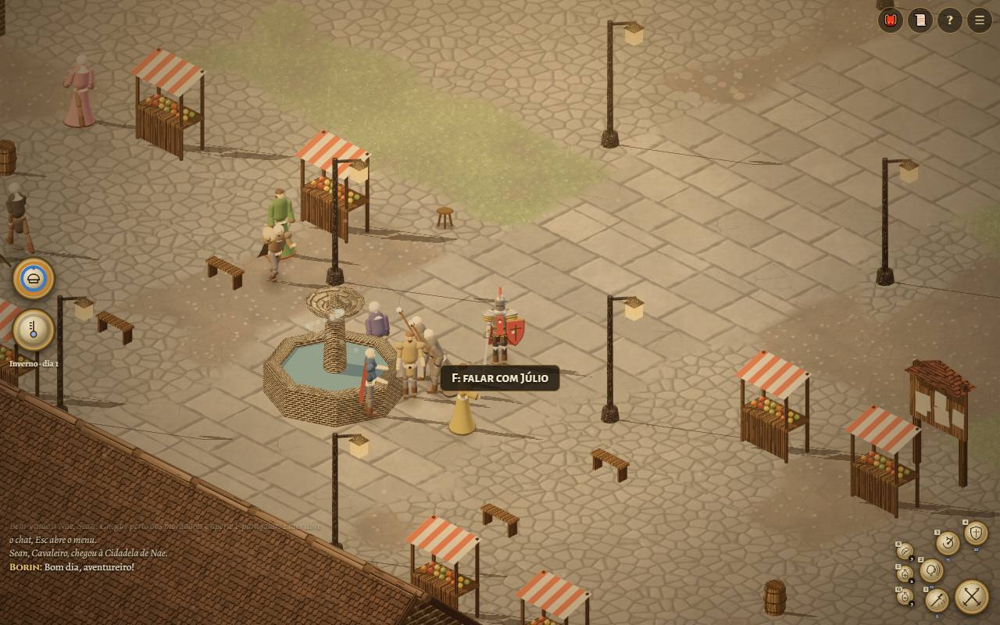

Guia de Nae
Nae é um RPG multijogador no navegador: uma cidade medieval viva, com moradores que lembram de você, leis que valem, negócios de verdade e uma morte que é para sempre. Este guia explica tudo o que existe hoje, com os números exatos.
Jogar agora ▸ RoadmapComeçando
A tela inicial tem Jogar, Guia do jogo, Roadmap, Configurações e Sair, sobre uma paisagem de verdade (o castelo de Bled ao amanhecer) com névoa, água e pássaros, que muda de cor com a hora do seu relógio. Em Jogar abre o painel dos seus heróis: lá ficam todos os seus heróis. ＋ Novo personagem abre o formulário limpo (nome, vocação — Cavaleiro, Atirador ou Mago — e cor); a 🗑 ao lado de cada herói apaga (pede confirmação). Um herói novo começa do zero: não herda casa, negócios, banco nem fama de um herói antigo, mesmo com o mesmo nome. Depois aperte Continuar com este herói para ir aos Reinos Online.
- Reinos Online: cada jogador pode abrir o seu reino. A tela mostra os reinos abertos (nome, anfitrião, quantos jogadores, 🔒 se tem senha; reinos de outra versão aparecem apagados) e tem Entrar pelo código para o reino de um amigo. Em Criar reino você dá um nome, uma senha opcional e escolhe o mundo: Mundo novo (cidade do zero) ou um mundo guardado (os seus, a cópia dos reinos em que você jogou e o mundo do antigo reino único). O mundo roda no navegador do anfitrião.
- Quando o anfitrião sai, o reino fecha e todos voltam para a tela de reinos com um aviso. Quem jogava fica com uma cópia do mundo (atualizada a cada minuto e quando o anfitrião fecha a aba) e pode reabri-lo depois em Criar reino, com casas, negócios e economia como estavam. Seu herói é sempre salvo no seu navegador.
- Conexão: se a conexão cair por um instante, o jogo tenta voltar ao mesmo reino algumas vezes e você continua no mesmo lugar; se o reino sumiu de vez, ele fecha. Quando a rede bloqueia a conexão direta, o jogo usa um servidor de retransmissão. O jogo confere a versão publicada a cada 3 minutos e se atualiza sozinho. Entrar pelo menu inicial começa no Templo.
- Qualidade gráfica automática: o jogo mede a fluidez e baixa ou sobe a qualidade sozinho (6 níveis: Mínima, Muito baixa, Baixa, Média, Alta e Ultra), com um aviso discreto. Em Configurações dá para trocar para um nível fixo.
- Seu herói fica salvo neste navegador: nível, ouro, itens, ofícios. Imóveis, negócios e conta no banco ficam guardados no reino de quem é anfitrião.
Primeiros passos
Um roteiro para o seu primeiro dia em Nae. Siga na ordem e em meia hora você já tem ouro, ofício e um lugar para dormir.
- Crie o herói e entreEm Jogar, escolha ou crie o herói (nome, vocação e cor), aperte Continuar com este herói e entre num reino aberto ou crie o seu. Você aparece na Cidadela de Nae, perto da praça.
- Olhe em voltaOs dois medalhões na borda esquerda são fome/sede e frio. O chat fica no canto de baixo (Enter para falar). TAB abre o painel com tudo o que você precisa saber do seu personagem.
- Guarde a arma na cidadeAndar de espada na mão perto das sentinelas dá bronca (três avisos e você fica procurado). Aperte G para guardar; aperte de novo antes de sair para caçar.
- ConverseChegue perto de um morador e aperte F. Borin, no Empório, compra o que você caça e vende as ferramentas. A Capitã Varn, no quartel, dá contratos de caça.
- Ganhe o primeiro ouroNo quadro de avisos da praça há bicos rápidos (levar água, carregar caixas, varrer). Ou compre um machado no Empório e corte lenha: aperte F uma vez perto de uma árvore.
- Arrume onde dormirA Pousada do Javali Magro (no bairro sudoeste, atrás da casa da Marta) aluga cabines com porta por 3 de ouro por dia: catre, baú de 12 espaços e você acorda lá. Casa própria é bem mais cara — é a meta seguinte.
- Saia para caçarSaque a arma (G) e saia pelo portão sul. Clique para golpear (segure para carregar), botão direito ergue o escudo para o mouse, C esquiva. Leve pão e bandagens.
- Não morra de vezCaído, você tem 30 segundos. Peça para um amigo te reanimar (F segurado) ou te carregar (H) até a Irmã Lúmina, na capela. Sozinho e longe? Evite brigas que você não pode vencer.
Controles
| Tecla | O que faz |
|---|---|
| Botão ⤢ do chat | Deixa o chat maior (caixa e letra); aperte de novo para voltar. Fica salvo. |
| WASD / setas / clique no chão | Andar (no celular, o joystick). Shift corre (gasta estamina). |
| Clique esquerdo | Golpe lateral. Segure para carregar o golpe: aparece o arco no chão e a parte do corpo que vai acertar. |
| Roda ↑ / ↓ · Z | Golpe de cima (cabeça) · estocada · golpe de baixo (pernas). |
| Botão direito (segurar) | Erguer o escudo (ou a guarda) na direção do mouse. Erguido logo antes do golpe: defesa perfeita e contra-ataque. |
| R (cavaleiro com escudo) | Empurrão de escudo: desequilibra quem está na frente. |
| C | Esquiva (em combate). |
| Espaço | Trocar o alvo: cada toque passa para o próximo monstro, do mais perto ao mais longe. Amarrado ou agarrado: martele para se soltar. Na gazua: acerte o tempo. |
| X | Atacar o inimigo mais próximo (o arqueiro atira sozinho no alvo). |
| 1–4 (e 5–7) | Habilidades da vocação (e as da árvore de constelações do cavaleiro e do atirador). O mago usa 1–5 para as cinco magias do Pentagrama. Na árvore (K), clique numa habilidade já aprendida para equipá-la num espaço da barra (1–4); clique de novo para tirar. |
| Q · E · 0 · B | Poção de vida · poção de mana · beber do cantil · bandagem. |
| G | Guardar / sacar a arma. |
| H | Toque: pegar, carregar ou largar (objetos e caídos). Segurar: menu de agarrar (puxar pelos braços/pés, carregar nas costas, mata-leão, amarrar). |
| F | Interagir: falar com quem está perto (o clique só ataca), dar ouro e itens a outro jogador, beber água, coletar (um toque), reanimar (segurar), revistar corpos (segurar), chutar em combate. |
| Enter | Abrir o chat para escrever (Enter envia, Esc fecha). Parado, o chat fica quase transparente. |
| O | Cavaleiro: alternar espada e escudo ↔ alabarda. |
| Ctrl · Ctrl+Shift · V | Agachar · deslizar correndo · sentar no chão. Para sentar numa cadeira ou deitar numa cama, clique nela de perto. |
| T (segurar) | Roda de emoções: saudar, dançar, apontar, comemorar, surpresa, adorar, raiva, medo, tristeza. |
| Y | Render-se às sentinelas quando procurado. |
| R (caído no chão) | Desistir (morte permanente). |
| TAB · I K J M N L | Painel do jogo (abre e fecha) e atalhos das abas: personagem e inventário, habilidades, jornada, mapa, negócios, imóveis. |
| Esc | Menu de pausa (o jogo continua atrás, escurecido): Continuar, Configurações, Guia, Roadmap e Sair para o menu inicial. |
| Configurações → Prédios na frente | Quando você está dentro de uma casa, os prédios entre você e a câmera podem ficar translúcidos (padrão), cortados na altura do joelho (estilo Tibia) ou escondidos. |
| N (dentro do seu negócio) | Abre direto a gestão daquele negócio — sem conflito com conversar (o F continua falando com as pessoas). |
| Roda do mouse · + − | Zoom da câmera (no mapa, zoom do mapa). |
O menu do jogo (Esc)

Tudo fica num menu com abas. O mundo não para enquanto ele está aberto: seu personagem fica parado e os outros veem “📜 no menu” sobre ele.
Personagem
Vida, mana, estamina, corpo e ferimentos, fome/sede/frio e o inventário (24 espaços).
Progresso
As habilidades que sobem com o uso (combate, ofícios, sobrevivência) e o botão de exportar/importar o herói num arquivo.
Habilidades
A árvore de constelações: 1 ponto por nível; cada ramo termina numa habilidade nova.
Jornada
Contratos da Capitã Varn, reputação e ofícios.
Mapa
Zoom (roda, Reino / Cidade / Perto de mim) e ícones dos lugares; passe o mouse para ver o nome.
Negócios
Seus negócios e a imobiliária com o mapa da cidade.
Receitas e ofícios
Cozinha, oficinas, coleta e o que cada nível libera.
Avisos
Histórico de tudo o que aconteceu: avisos do reino, falas e mensagens para você.
Configurações
Gráficos, brilho, zoom, aviso dos golpes, chat, física das quedas, sala e senha do reino.

Vocações
| Vocação | Vida (nv 1) | Mana | Arma corpo a corpo | Aptidão |
|---|---|---|---|---|
| Cavaleiro | 150 (+24/nível) | 30 | Espada e escudo, ou alabarda (O) | Pele de Aço: 30% menos dano. |
| Atirador | 105 (+15) | 50 | Adaga; arco à distância (alcance 6) | Olho de Águia: 20% de crítico (×1,8). |
| Mago | 90 (+11) | 100 | Cajado de perto e as cinco magias do Pentagrama. Com uma varinha na mochila, magia mais forte e mais mana. | Mente Arcana: mana volta 2× mais rápido. |
Habilidades
- Cavaleiro: Golpe Brutal (220% e atordoa 1,4 s) · Grito de Guerra (atrai inimigos em 5 tiles, −20% de dano por 6 s) · Redemoinho (160% em volta) · Muralha de Ferro (−60% de dano por 6 s).
- Atirador: Tiro Duplo · Flecha Perfurante (atravessa a fila, 180%) · Chuva de Flechas (130% na área) · Passo Ágil (60% mais rápido, ataca 2× por 6 s).
- Mago — o Pentagrama dos cinco elementos: o mago nasce com uma magia de cada elemento, nas teclas 1 a 5, e luta de perto com o cajado (não atira mais à distância).
- 1 Brasa na Mão (Fogo): a mão pega fogo por 12 s — golpes de cajado +40% e o alvo arde por 3 s; a mão ilumina como tocha, acende fogueiras apagadas e os animais recuam do fogo.
- 2 Passo do Vento (Ar): uma lufada leva você 3,5 casas para onde está andando (ou para onde olha); no meio do passo nada te acerta.
- 3 Florescer (Terra): flores brotam na grama em volta e ficam 3 minutos; quem está nelas recupera um pouco de vida e fôlego, e os animais ali ficam calmos.
- 4 Fé Inabalável (Luz): cura 8% da vida de você e do aliado mais perto (até 3 casas).
- 5 Fonte (Água): enche o seu odre e o de quem está perto, todos bebem um gole, apaga quem está pegando fogo e as fogueiras, e rega as flores (duram mais e curam o dobro).
O Grimório do mago (tecla K)
No lugar das constelações, o mago tem um grimório: um livro aberto com o Pentagrama desenhado em tinta e ouro. Cada ponta é um elemento — Luz em cima, Água, Fogo, Terra e Ar — com um selo de cera da sua magia base. Descendo pela ponta até o centro ficam 2 talentos (1 ponto por nível, até 3 em cada) e 3 evoluções que ainda estão para chegar (Bola de Fogo, Despertar do Ent, Restauração e outras). No meio do Pentagrama ficam as combinações de dois elementos (Tornado de Fogo, Campo de Defesa, Lodaçal…), também em breve. Passe o mouse para ler as anotações na página da direita.
Aparências: comum no nível 1, rara no 10, lendária no 20.
Combate

O corpo a corpo é direcional: você escolhe o golpe, o lado e a altura. Cada golpe tem preparação, impacto e recuperação, e gasta fôlego (a barra amarela, 200 no máximo).
| Golpe | Como | Acerta | Particularidade |
|---|---|---|---|
| Lateral | clique | tronco | o equilibrado (100%): arco largo, pega até 2 inimigos. Bloqueie do lado de onde ele vem. |
| De cima | roda ↑ | cabeça | o mais forte (140%), lento e fácil de ver chegando. Bloqueie no alto. |
| Estocada | roda ↓ | tronco | rápida e longa (80%, alcance 2), arco estreito. Fura o bloqueio alto e o baixo: bloqueie de lado. |
| De baixo | Z / botão lateral | pernas | o mais rápido (75%), deixa lento e às vezes derruba (1 em 4). Bloqueie embaixo. |
- Golpe carregado (segurar o clique): até 60% mais dano. Na cabeça, mata ou decapita (o elmo do cavaleiro reduz a chance pela metade); no tronco, abre sangramento grave; nos membros, ferida feia e pode decepar.
- Bloquear (botão direito): veja abaixo. No tempo certo (≈0,3 s antes do impacto) atordoa quem atacou e libera um contra-ataque mais forte.
- Finta: trocar de golpe durante a preparação (gasta fôlego).
- Alabarda: alcance 65% maior, 22% menos dano, mais lenta, duas mãos.
- Arco: mira em arco com a trajetória exata e o ponto de queda (mostra a parte do corpo). Flechas fazem dano triplo e ficam cravadas (F para arrancar).
- Aviso dos golpes inimigos: um arco no chão mostra o golpe que vem (Discreto, Forte ou Desligado nas configurações).
Defesa e escudo
Segure o botão direito: o personagem ergue o escudo (ou a guarda) na direção do mouse e um arco dourado no chão mostra o que está protegido. Basta mirar no inimigo.
- Tempo certo: erga o escudo logo antes do golpe chegar (≈0,3 s, o arco brilha forte nesse instante). É a defesa perfeita: o inimigo cambaleia, você não gasta fôlego e ganha um contra-ataque mais forte.
- Fora do tempo: com o escudo já erguido, o golpe que vem pela frente é defendido gastando fôlego (com escudo, bem menos). Sem fôlego, a guarda quebra.
- De lado ou pelas costas: fora do arco, você leva o golpe inteiro. Vire o escudo para quem ataca.
- Sem escudo (alabarda, adaga, cajado), um golpe carregado defendido fora do tempo quebra a guarda.
- O escudo segura flechas que vêm pela frente (bloqueando no alto ou dos lados).
- Empurrão de escudo (R): curto, gasta 25 de fôlego, atordoa por um instante e empurra monstros pequenos. Espera 2,5 s para repetir.
- O escudo gasta: cada bloqueio tira um pouco (golpe carregado tira mais). A barrinha embaixo dos pontos mostra quanto falta. Quebrado, ele não protege mais — Hrodgar conserta na forja por 15 de ouro.
Monstros
Monstro que pegou você para alvo persegue até morrer ou até perder você de vista (uns 5 segundos sem ver). Fugir para a cidade não basta: ele entra atrás — mas as sentinelas saem para brigar com ele.
Guardar a arma (G)
Você entra no reino com a arma guardada (as sentinelas não implicam). A espada vai para a bainha na cintura; escudo, alabarda, arco e cajado vão para as costas. Leva meio segundo (a espada) ou um pouco mais (o resto). Com a arma guardada:
- Cavaleiro e Atirador dão soco: dano baixo, derruba e atordoa, mas nunca mata.
- O Mago continua lançando magias com as mãos.
- Coletar, carregar alguém e trabalhar num turno guardam a arma sozinhos; ela volta para a mão uns segundos depois.
- Na cidade, andar de arma sacada perto de sentinelas faz elas mandarem guardar (veja Lei).
Corpo, ferimentos e morte
- O corpo tem seis partes: cabeça, tronco, dois braços, duas pernas. Cada uma pode ferir, sangrar e ser decepada.
- Sangramento: estanque com bandagem (B), cauterize perto do fogo ou procure a sacerdotisa. Ferida grave sem bandagem pode infeccionar.
- Perna ferida: você manca. Braço da arma ferido: o braço pende. Pouca vida: anda curvado.
- Caído: 30 s para alguém reanimar (segurar F) ou carregar (H) até a Irmã Lúmina. Sentinelas carregam caídos inocentes até ela sozinhas.
- Membro perdido: o ferreiro faz prótese (perna de pau ou gancho) por 30; a sacerdotisa devolve os membros com o ritual por 120 de ouro — o primeiro é de graça.
Sobrevivência
Come e bebe sozinho: com fome ou sede abaixo de 30%, o personagem come a comida mais simples da mochila (pão antes de ensopado) e bebe chá ou do odre — nunca no meio de uma luta.
Os dois medalhões na borda esquerda mostram fome e sede (arcos) e frio (termômetro).
| Necessidade | Esvazia em | Como resolver |
|---|---|---|
| Fome | ~45 min | Pão, maçã, frutas, carne assada, ensopado, torta (cozinhar no fogão ou fogueira). |
| Sede | ~30 min | O cantil infinito bebe sozinho quando aperta. F perto de água (rio, poço, fonte): o personagem vai até a beira, vira e bebe. |
| Frio | 5 min (fora, de noite) | Fique perto do fogo, dentro de casa ou volte de dia. O inverno é mais frio. |
Fome, sede e frio no máximo tiram vida aos poucos. Correr e lutar dão mais fome e sede.
Tempo e estações
- Um dia do jogo dura 12 minutos reais (1 hora do jogo = 30 s).
- São 4 estações de 7 dias: primavera, verão (dias longos), outono (folhas caindo) e inverno (neve, geada, horta rende menos).
A cidade e os moradores

Nae tem a cidadela e a Vila do Oeste do outro lado do rio. Na cidadela: a praça do mercado no centro, com a Catedral da Aurora logo ao lado — da porta dela desce a avenida da Catedral (calçamento em mosaico, estátuas, estandartes da Aurora, canteiros e lampiões) até a praça do portão sul; a guilhotina fica em frente ao castelo, à esquerda da avenida; o castelo ao norte da praça, com o bairro nobre à direita (casarões de pedra dos dois lados de uma avenida com chafariz, jardins formais, estátuas e lampiões); o Banco de Nae no fim da rua oeste, com a praça do chafariz (bancos, flores e postes) do outro lado da rua; a taverna e as lojas a oeste da praça do mercado, com a casa amarela da Marta (quintal cercado com frutíferas, canteiros e a barraquinha) e a loja Elixires da Lua Prateada da alquimista Morgana (vitrais coloridos e latão) logo atrás delas, de porta para a rua de baixo; o escritório do Mestre Anselmo (imobiliária) fica no alto, ao norte, perto da muralha, com a porta para o sul; a Padaria da Praça fica logo ao sul da praça do mercado, com a porta para a avenida da Catedral; a pousada no bairro sudoeste, atrás da casa da Marta, de porta para o leste; o quartel no bairro sudoeste, de porta para o leste, com os bonecos de treino na frente; o estábulo junto ao portão sul; a cadeia no sudeste. Os moradores têm casa, rotina e necessidades: dormem das 22h às 6h, trabalham, almoçam, conversam na taverna e na praça.
- Memória: cada morador lembra do que viu você fazer e do que ouviu falar (a fofoca corre na taverna à noite). A opinião vai de
- Humor e carteira: cada morador com nome tem dinheiro próprio e um humor. Recebe o salário do negócio onde trabalha (os mensageiros, da cidade) e gasta no almoço da Padaria, na taverna e nas lojas: o dinheiro circula entre moradores e negócios. O humor sobe com necessidades atendidas, salário em dia, comida e bebida fora de casa; cai com fome, cansaço, falta de dinheiro, chuva, salário atrasado e crimes que ele viu. Triste trabalha mais devagar e às vezes falta ao trabalho para ir à taverna; feliz produz um pouco mais e compra mais; sem dinheiro, come em casa. Donos de negócio ficam de bom ou mau humor conforme o negócio vai.Amigo a Inimigo e aparece no diálogo com o motivo.
- Amigos cumprimentam pelo nome, dão presentes e fazem desconto; inimigos cobram mais e chamam a guarda.
- Dar presentes pelo diálogo melhora a opinião.
- A memória zera a cada reino novo.
- Atacados, os corajosos revidam e os outros fogem gritando pela guarda. Caídos se arrastam implorando.
- Visitantes, viajantes e donas de casa entram pelos portões (≈15 de dia, ≈5 à noite) e compram de verdade nas lojas dos jogadores. Marginais raros furtam e fogem; quem pega o ladrão ganha recompensa.
- Sinais: quando um morador ou visitante compra numa loja (de jogador ou não), uma moedinha sobe sobre o vendedor (com um “+” verde) e sobre quem comprou. Quem está levando uma entrega tem uma caixinha sobre a cabeça; ao entregar, pisca um ✓ verde.
- Taverna à noite: os fregueses sentam nas cadeiras com a caneca, brindam, jogam dados e cartas e conversam; a Lina leva canecas às mesas. Das 19h às 23h o bardo toca no palco: quem está em pé dança e os sentados aplaudem (aparece a dica para você dançar com T). Bêbado às vezes cochila na mesa.
- Ronco do Dragão (a taverna da praça): pub Tudor com base de pedra, andar de cima saliente sobre a rua, faixas de janelas de vitral (vidro levemente azulado com brasões de dragão, caneca e chama) que acendem à noite e jogam luz colorida no chão, porta em arco Tudor, flores nas janelas e um dragão de madeira dormindo na cumeeira, abraçado num barril (à noite a chaminé solta fumaça verde). Dentro: balcão com torneiras, lareira enorme com crânio de dragão, palco do bardo com tapete de escamas, ovo de dragão na prateleira, quadro de campeões e mezanino. O taverneiro é Brom Barbarruiva, um anão que jura ter visto o dragão; a ajudante Lina serve as mesas.
- Hidromel de Fogo (12 ouro, com o Brom): solta uma labareda pela boca e tira o frio por 5 minutos. Vale por duas canecas para ficar tonto.
- Desafio do Tonel: fale com o Brom. Sozinho (10 ouro): uma caneca por rodada, a cada 4 s; aguentar 5 sem cair dá 40 de ouro e seu nome no quadro de campeões. Com aposta (20 ou 50): contra outro jogador (ele aceita falando com o Brom) ou contra um freguês da taverna; quem cair primeiro perde e o vencedor leva o pote. Quem cai desaba no chão por uns segundos e fica tonto. Quanto mais nível e mais bem alimentado, mais você aguenta.
- A lenda do dragão: à noite o bardo canta 5 versos da lenda. Quem ouvir a lenda inteira dentro da taverna ganha a Sorte do Dragão: +15% de ouro dos monstros por 10 minutos.
- Caneca de cerveja: o Brom vende por 3 ouro. Clique nela na mochila para beber: mata a sede e devolve fôlego. Três canecas em 6 minutos deixam o herói tonto por 2 minutos: ele anda em zigue-zague e todos veem você cambaleando.
- Brindar 🍻 (tecla T → Brindar): quem está perto de você, no mesmo prédio, levanta a caneca junto, e os moradores respondem “Saúde!”.
- Ver alguém arrastando um corpo assusta: fogem, mandam largar, chamam a guarda e espalham a fofoca. Se a pessoa só está desmaiada e você a leva à capela, oferecem ajuda.
Lei, crime e castigo
- Atacar alguém na cidade à vista de uma sentinela deixa você procurado por 5 minutos (sair da cidade limpa a ficha). As sentinelas gritam, perseguem e levam você à cadeia; assassinos vão à guilhotina.
- Render-se (Y): fique parado e uma sentinela vem te algemar.
- Pena: agressão 2 min, ataque à traição 3 min, assassinato 6 min. Dormir no catre faz o tempo passar 2× mais rápido. Fiança: 30 de ouro por minuto restante (você ou um amigo pagam ao carcereiro). Gazua: tente arrombar a cela (falhar dá +1 min); amigos abrem a cela de noite com o carcereiro dormindo.
- Guilhotina: o condenado pode deixar últimas palavras; alguém pode pagar 1000 de ouro de fiança.

- Plateia: quando alguém vai para a guilhotina, os moradores por perto param o que fazem e fazem uma roda em volta do cadafalso. Quem gostava do condenado pede clemência e chora; quem não gostava comemora; os outros rezam ou cobrem os olhos. Por um dia, a cidade comenta a execução na taverna e na praça.
Patrulhas
Duas duplas de sentinelas patrulham as ruas principais — a que corta a cidade de leste a oeste (e desce até o portão sul no meio da ronda) e a que vai do castelo ao portão sul —, indo e voltando lado a lado. Duas sentinelas guardam a porta do castelo, e há duplas nos portões.
Sentinelas que ameaçam
Elas andam com a arma guardada e sacam para brigar ou ameaçar quando veem: arma sacada na cidade, invasão (castelo, perto do cofre do banco), alguém de reputação muito baixa (ficam de olho) ou quem carrega um corpo. São três avisos; obedecer acalma, desobedecer deixa você procurado por 1 minuto e elas atacam.
Com um corpo, a sentinela interroga e as testemunhas decidem: se algum morador viu você atacar ou matar, você é preso; se ninguém viu, ela manda levar o corpo ao templo e libera.
Trabalho e ofícios

- Coleta (aperte F uma vez perto do recurso, com a ferramenta do Empório; o personagem trabalha até terminar ou até você andar): machado em árvores (toras, às vezes madeira nobre), picareta em pedras (minério, às vezes gema), foice no mato alto (linho, às vezes folha-de-prata). Carvalho e rochas grandes pedem nível 3.
- A árvore cai e a pedra quebra: cada árvore dá 3 golpes (o carvalho, 4), um item por golpe, e no último ela tomba e vira toco — cresce de novo em uns 5 minutos. A pedra também aguenta 3 golpes (a rocha grande, 4), se desfaz e volta em uns 4 minutos.
- Entalhe à mão (Esc → Receitas e ofícios, precisa de um machado): 2 toras = Varinha entalhada; 1 madeira nobre + 1 tora = Varinha de carvalho (Artesão 3); 1 madeira nobre + 1 gema = Varinha arcana (Artesão 5). Sobe o ofício de Artesão.
- Varinha é a arma do mago: ele usa sozinho a melhor que estiver na mochila. Entalhada +10% de dano mágico e +10 de mana; de carvalho +20% e +20; arcana +30% e +35. Para outras vocações, é mercadoria (a Arcanos compra).
- Quadro de avisos na praça: bicos (água para o Brom, caixas para o Borin, varrer a praça) e entregas.
- Turno no seu próprio negócio: sem salário, mas o negócio vende e produz 80% mais enquanto você trabalha e, ao fim de cada turno, você mesmo faz mercadoria: na oficina, a produção de 2 horas e meia (ou receitas com o que está no depósito); na loja, até 3 itens da prateleira (a matéria-prima sai do cofre pela metade do preço).
- Comprar do próprio negócio: o dono compra a preço de custo (o ouro vai para o cofre) no balcão das lojas e também negociando na padaria, na forja e na taverna.
- Salário na tela: ao terminar um turno, o valor ganho sobe em cima do seu personagem com uma moedinha (no seu próprio negócio, mostra quanto ele rendeu).
- Turnos: fale com quem trabalha no negócio (F) e escolha “Trabalhar um turno aqui”, ou aperte F numa bancada vazia; dura 1 min e 15 s e, ao terminar, outro começa sozinho — os turnos seguem enquanto você estiver no prédio. No seu próprio negócio não há salário (o dinheiro já é seu), mas ele vende e produz 80% a mais enquanto você trabalha, e no fim de cada turno o chat diz quanto rendeu. O turno é o botão “Trabalhar um turno” no painel de gestão. Todo fim de turno aparece no chat. Saia do prédio para parar. Uniforme automático.
- Ofícios (nível 1 a 10): Lenhador, Minerador, Herbalista, Artesão, Comerciante, Mensageiro, Biscateiro. Cada nível de coleta deixa o trabalho 6% mais rápido.
Imóveis e negócios
- Fale com Mestre Anselmo na Imobiliária Chave de Bronze ou procure as placas “Aluga-se” e “À venda” pregadas ao lado da porta dos imóveis livres. O preço depende do lugar (perto do castelo é caro, a vila é barata).
- Casa comprada: dentro dela você não sente fome nem sede.
- Casa: aluguel cobrado por semana (7 dias do jogo) — sem pagar por 2 dias, perde a casa. Casa sua: porta trancada (só você e autorizados), baú seguro de Os seis casarões do bairro nobre (Valmont, Aldren, Morvane, Lorvan, Brisane e Eldren) também se alugam e se compram, por um preço de bairro nobre.48 espaços (chegue perto dele e aperte F), você acorda nela, e dormir na própria cama dá Bem descansado. Casas com morador podem ser compradas, e ele paga aluguel a você.
- Casas ficaram mais caras: morar numa casa é a meta de quem já tem renda. Para começar, use a pousada (abaixo).
- Comprar custa 60 dias de aluguel, com imposto pequeno; casa vende de volta pela metade.
- Casa comprada com inquilinos: eles continuam morando lá e pagam aluguel toda semana, que cai direto na sua conta do banco (mesmo com você fora do jogo). Se você despejar os inquilinos, eles saem em 1 dia do jogo e a casa fica para você morar, mas você perde reputação com os moradores e os comerciantes.
- Vender um negócio (no menu de gestão, aba Visão geral, ou no painel de imóveis): você recebe tudo o que investiu — o que pagou (ou a caução, se alugado) mais tudo o que gastou em melhorias. As melhorias ficam no negócio: quem comprar depois paga o preço normal mais o valor delas e já começa com tudo melhorado.
- Lojas e oficinas têm dono: todas as que não são de jogador pertencem a um comerciante (o nome aparece na imobiliária e quando você pergunta ao funcionário). Elas funcionam normalmente e só se compram — não se alugam. Quem já alugava continua com o contrato. A compra pede confirmação numa janela do jogo.
- Forja do Hrodgar (comprável): transforma 1 madeira + 2 minério em ferramentas. As ferramentas vão para o balcão do Hrodgar (machado, picareta, foice), e o que ele vende — e os consertos, afiações e próteses que faz — rende para você. Ligue uma serraria e uma mina suas: os mensageiros levam a madeira e o minério.
- Coletores (serraria, mina e horta): toda oficina que extrai tem um coletor da casa, e o dono pode contratar mais 2 na aba Funcionários. De dia (7h às 19h) eles saem com a ferramenta, cortam árvores, quebram pedras ou colhem o mato perto da oficina — a árvore cai e a pedra quebra de verdade —, voltam carregando (com a caixinha sobre a cabeça) e enchem o depósito. É daí que vem a produção dessas oficinas; ferramentas melhores deixam o trabalho mais rápido. O mensageiro continua levando a produção para os seus outros negócios.
- Ronco do Dragão (comprável): cada freguês lá dentro gasta um pouco por hora; com linho no depósito (da sua horta, pelos mensageiros), as mesas são servidas melhor e rendem mais. O que o Brom vende no balcão também é seu.
- Lojas vendem sozinhas (margem barato, justo ou caro), reabastecem pelo fornecedor ou pelas suas oficinas. Oficinas extraem (serraria, mina, horta) ou transformam (carpintaria, alambique). Os mensageiros só saem com 20 itens ou mais (ou tudo o que ainda cabe no destino). Quem tem várias receitas (a Padaria faz pães, tortas e bolos; a Carpintaria, artigos de madeira e papel) faz todas automaticamente, começando pela que tiver menos estoque; no painel do negócio dá para fixar uma só. Mensageiros levam a produção andando — e podem ser assaltados.
- Preços e margens: na loja, o preço de venda é o preço de atacado × a margem — Barato 1,25 (90% dos clientes compram), Justo 1,6 (70%) ou Caro 2,1 (42%). Atacado: Madeira 2, Minério 3, Ervas 3, Linho 4, Papel 7, Varinhas 8, Poções 11, Cristais 14, Ferramentas 16.
- Oficinas vendem a produção: a cada hora, o que passar da reserva vai para o fornecedor a 85% do preço (reserva automática: 10 de cada coisa, ou 40 se um negócio seu usa aquilo; dá para mudar na aba Estoque). Oficinas que transformam só compram matéria-prima se compensar — o painel mostra quanto cada unidade dá de lucro.
- Lucro de verdade: a Visão geral mostra o lucro líquido de hoje e dos últimos 7 dias (receita − gastos − salários − imposto) e, se o negócio estiver no prejuízo, diz por quê (receita baixa, prateleira vazia, estoque parado, salários altos).
- Negócios de NPC (Empório do Borin, Ateliê, a forja, a taverna…): também se compram, pagando 50% a mais — o NPC continua trabalhando no balcão, e o que ele vende rende para você. Eles têm economia própria: caixa, produção, compra de insumos (primeiro dos outros negócios de NPC, pelo preço justo; se ninguém tiver, do fornecedor, 30% mais caro), vendas aos moradores, salário e manutenção. A Padaria compra farinha do Moinho, que compra trigo da Fazenda; a Forja compra madeira e minério; as lojas se abastecem nas oficinas. Com 3 dias seguidos no vermelho, o negócio fecha por 2 dias e reabre com um empréstimo do banco (é raro: costuma depender de algo de fora, como o inverno na fazenda ou um roubo).
- Ofertas: no painel da imobiliária, um negócio de outro jogador tem o botão “Fazer uma oferta ao dono”. O dinheiro fica reservado no banco; o dono aceita, recusa ou faz uma contraproposta (você aceita ou não). Sem resposta em 1 dia do jogo, o dinheiro volta.
- Portas abertas: lojas, oficinas, taverna, pousada e banco de jogadores ficam abertos para todo mundo; só as casas são trancadas.
- Comprar e melhorar com o banco: comprar imóveis na imobiliária e as melhorias do negócio pagam primeiro com a conta do banco e completam com a bolsa.
- O lucro cai direto na sua conta do banco — vale para lojas, oficinas e fazendas. Depósitos grandes: oficinas guardam até 400 e lojas 120 (+80 por nível de prateleiras). Estando no negócio, os botões Pegar do painel tiram mercadoria do depósito ou das prateleiras para a mochila (madeira vira tora, trigo, frutas viram maçãs, pães, tortas, cristais viram gemas, ervas, linho, minério, varinhas, papel vira mapa e poções). O painel do negócio mostra o saldo; sacar só com um banqueiro, no Banco de Nae. Depositar vale de qualquer lugar: no menu de negócios há o botão Depositar tudo. Não há limite de negócios por personagem. O painel conta como lucro o que uma oficina manda para os seus outros negócios (madeira da serraria para a sua loja, por exemplo). Salários, encomendas e reposição saem dela (se faltar, da bolsa). À noite, ladrões podem levar um pouco de mercadoria (nunca o ouro do banco); as trancas reforçadas diminuem isso. Melhorias: prateleiras, vitrine, ferramentas e trancas.
- Reposição automática (lojas, aba Estoque): ligada, a loja encomenda do fornecedor o que faltar para encher as prateleiras (dividido entre as mercadorias) sempre que houver dinheiro no banco. Oficinas que transformam já compram sozinhas a matéria-prima que falta (também pelo banco).
- Funcionários (aba Funcionários): procure candidatos e contrate até 3 por negócio (nas oficinas que extraem, até 2 coletores além do da casa). Cada um deixa o negócio 40% mais produtivo, e o traço ajuda mais: rápido (+15%), simpático (clientes compram mais) ou honesto (metade do roubo à noite). O salário sai do banco todo dia — sem ouro, ele vai embora. Eles saem de casa de manhã, andam até o negócio, trabalham das 7h às 20h e voltam para casa no fim do dia. Dispense quando quiser.
- Quantos negócios: sem limite. Painel na tecla N.
- Colocar do inventário: no painel do negócio, aba Estoque, você guarda o que coletou ou fez. Toras vão para o depósito da oficina (carpintaria transforma em varinhas ou papel); varinhas, gemas, ervas, mapas e linho vão para as prateleiras da loja que vende aquilo.
- Bancada da Arcanos & Varinhas: até 60 de madeira; o atendente entalha 1 varinha por hora com 2 de madeira, direto para as prateleiras. A madeira chega de três jeitos: você deixa toras na bancada, os mensageiros da sua serraria levam (30 por viagem; a bancada guarda até 150), ou, com a reposição automática ligada e sem serraria própria, o fornecedor traz quando a bancada passa da metade (sai do banco).
- Contas automáticas (aluguel, imposto, salários, diária da pousada) saem da sua conta no banco e só então da bolsa. Com dinheiro no banco, as contas são pagas mesmo com você fora do jogo.
- Dá para comprar no balcão da loja de outro jogador — o ouro vai para a conta do banco dele.
Escadas, andares e porões
Para trocar de andar, pise no primeiro degrau (ou no alçapão, ou no vão da escada lá em cima): o personagem sobe ou desce andando, a câmera sobe junto e um andar vai sumindo enquanto o outro aparece. Lá em cima você vê só o seu andar, com o de baixo escurecido. Subir e descer é sempre livre, até em combate.
| Escada | Como é | Onde tem |
|---|---|---|
| De parede | Larga, encostada na parede do fundo, com corrimão. | Castelo, Quartel e o 1º andar dos casarões |
| Caracol | 1 tile no canto: poste no meio, degraus em leque e corrimão de ferro; você dá uma volta e um quarto em torno do poste. | Pergaminhos & Mapas, Casa Morvane e a torre da loja de elixir |
| Escada de mão e alçapão | Encostada na parede; você sobe reto e chega por um alçapão aberto no piso. | Depósito do Empório do Borin, sótão dos casarões e os porões |
| Externa | Por fora, na lateral: degraus de madeira, patamar e porta no andar de cima (entra sem passar pelo térreo). | Escritório do Mestre Anselmo (o quarto dele fica em cima) |
- Porões: um andar abaixo do térreo, pelo alçapão. A adega do Ronco do Dragão (atrás do balcão: barris e caixotes) e o cofre embaixo do Banco de Nae (na frente do cofre redondo: ouro, barras e baús, só de enfeite). Lá embaixo tudo em volta fica escuro (estamos debaixo da terra), sem chuva nem neve, e só as velas iluminam.
- Observatório: a loja Elixires da Lua Prateada tem um 2º andar. O caracol no canto da torre leva ao observatório da Morgana, com telescópio de latão, orbe, livros e mapa celeste.
- Quem está em outro andar (ou no porão) não aparece para você, e você só conversa com quem está no mesmo andar. O dragão não alcança quem está dentro dos prédios em andares ou no porão.
Pousada do Javali Magro

No bairro sudoeste, atrás da casa da Marta (no antigo lugar do estábulo): um prédio baixo de pedra embaixo e tábuas em cima, com telhado de meia-água, duas janelinhas no telhado, cata-vento de javali, cabeça de javali sobre a porta e uma varanda coberta com banco e lampião na ponta norte da fachada leste. Logo na entrada fica o balcão da Dona Ilsa, com a lareira, e uma salinha com mesa; o corredor passa entre as cabines. É o jeito barato de ter onde dormir antes de comprar ou alugar uma casa.
| O quê | Como funciona |
|---|---|
| Diária | 3 de ouro por dia, pago na hora (primeiro da sua conta no banco, depois da bolsa), sem caução (1, 3 ou 7 dias). Fale com Dona Ilsa (F); depois de escolher, a conversa fecha sozinha. |
| Cabine | 3 cabines, cada uma com a sua cortina colorida e o número bordado (a cortina corre quando alguém passa). Só o hóspede entra na sua cabine. Dentro: catre (clique nele, de perto, para deitar; dormir dá Bem descansado) e baú de 12 espaços que só você abre — ao chegar perto aparece “F: abrir o baú da sua cabine”. |
| Acordar | Sem casa, você acorda na sua cabine quando entra no reino. |
| Lotação | De noite chegam viajantes e visitantes que também dormem lá — nem sempre tem vaga. |
| Negócio | A pousada pode ser comprada: as diárias (de jogadores e de viajantes) e um pouco por hora de cada hóspede (café, lenha, roupa lavada) vão para a conta do banco do dono. |
Banco de Nae

Os moradores também usam o banco: depositam e sacam (taxa), trocam moedas estrangeiras, guardam objetos de valor no cofre e pegam empréstimos (pagam com juros aos poucos; alguns atrasam e poucos somem sem pagar). Tudo isso rende para o dono do banco, e dá para ver a fila nos balcões. No fim da rua oeste, com a porta para o sul e a praça do chafariz do outro lado da rua: um salão de mármore xadrez, com balcões altos dos dois lados, seis banqueiros, lustres, o relógio de pêndulo e o quadro com as taxas; no fundo, a porta redonda do cofre e o tesouro (barras e sacos de ouro) atrás das grades; na entrada, os bancos de espera e o porteiro. Fale com qualquer banqueiro.
| Serviço | Como funciona |
|---|---|
| Conta | Depositar e sacar. Rende 2% por semana, não é furtado e não cai no chão quando você cai. Paga suas contas automáticas primeiro (aluguel, imposto, salários, diária) e recebe direto o lucro dos seus negócios. |
| Empréstimo | Até 100 + 4 × reputação. Juros de 10% por semana (calculados uma vez por semana), prazo de 2 semanas. Vencido, é cobrado do seu saldo; se não der, as sentinelas vão atrás. |
| Morte | O saldo de quem morre de vez fica com o dono do banco. |
| Comprar o banco | Só se compra, e o Conselho exige reputação 70. O dono fica com parte dos juros e com as heranças. |
Reputação
Além do número geral (0 a 100), você tem fama com cinco grupos, de −100 a +100: Moradores da cidade, Vila do Oeste, Nobreza, Guarda e Comerciantes. Tudo aparece na Jornada (J), com o seu título e as vantagens.
| Título | Reputação | Vantagem |
|---|---|---|
| Herói de Nae | 90+ | 15% de desconto e metade da pena na cadeia |
| Honrado | 75+ | 10% de desconto, imóveis 10% mais baratos, as sentinelas dão um aviso a mais |
| Respeitado | 60+ | 5% de desconto nas compras |
| Cidadão | 45+ | — |
| Suspeito · Mal-visto · Odiado | abaixo de 45 | abaixo de 30, tudo 15% mais caro e as sentinelas ficam de olho |
- Presentes (F → “Dar ... de presente”): sobem a fama com o grupo daquele morador. Cada grupo e alguns moradores têm gostos (o diálogo marca com ♥) — o presente certo vale mais que o dobro; dar o mesmo presente de novo vale cada vez menos. Um presente por morador a cada 10 minutos. Sentinelas também aceitam (gostam de comida).
- Outras formas: doar 25 de ouro à capela (Irmã Lúmina), pegar ladrões (Guarda e Comerciantes), trabalhos, turnos, aluguéis em dia, comprar no comércio, ajudar quem caiu.
- Crimes derrubam com a Guarda e com os moradores.
Vai de 0 a 100 e aparece na Jornada. Começa em 50 e soma: a média do que os moradores acham de você, ladrões pegos, trabalhos e turnos feitos, negócios e aluguéis em dia; cada crime tira 5.
- Libera empréstimos maiores e a compra do banco (70).
- Reputação muito baixa faz as sentinelas ficarem de olho em você.
Serviços da cidade
Irmã Lúmina · capela
Reanima caídos trazidos a ela, bênção grátis (vida e mana cheias), ritual dos membros (120, o 1º grátis).
Hrodgar · forja
Afiar a arma (25: +15% de dano por 4 min), consertar o escudo (15), prótese (30); negocia ferramentas e compra minério, gemas e madeira. A forja pode ser comprada.
Borin · Empório
Compra de tudo; vende pão, unguento, lenha, corda, gazua, ferramentas de coleta e poções. Tem o odre e a venda rápida do saque.
Brom · taverna
O anão do Ronco do Dragão: cerveja, Hidromel de Fogo, ensopado, o Desafio do Tonel e a lenda do dragão. Lina, a ajudante, serve as mesas. A taverna pode ser comprada.
Capitã Varn · quartel
Contratos de caça e recompensas.
Mestre Anselmo · imobiliária
Casas, lojas e oficinas para alugar ou comprar.
Do trigo ao pão
- Fazenda do Trigo Dourado (Vila do Oeste): um campo de trigo que cresce de novo depois de ceifado. Os ceifeiros da fazenda colhem trigo (e algumas frutas) e enchem o depósito.
- Moinho do Vento Leste (ao lado da fazenda): 2 trigo → 1 farinha.
- Padaria da Praça (casa de enxaimel cor de trigo com telhado vermelho, forno de pedra em cúpula aceso do lado de fora, vitrine de pães com toldo listrado, sacos de farinha, cestos de pão e um pão dourado pendurado): farinha → pães; farinha + fruta → tortas; 2 farinhas + fruta → bolos. O pão e as tortas que sobram vão para o Borin e para a taverna (o dono recebe), e o Mestre Bartolo vende no balcão. Com muito pão na cidade, o pão fica mais barato.
- Os três são negócios compráveis, ligados pelos mensageiros (fazenda → moinho → padaria).
- Entregas: seis mensageiros levam a produção das suas oficinas para os seus outros negócios assim que ficam livres, atendendo primeiro quem espera há mais tempo e levando várias mercadorias por viagem (até 60). Se algum negócio esperar mais de 3 horas do jogo, a carroça da vila leva direto.
- Você também pode: ceifar trigo com a foice (F no campo) e assar pão caseiro no fogão (2 trigos).
Arcanos & Varinhas
Uma loja alta, estreita e um pouco torta, de madeira escura, com letreiro dourado gasto, janelinhas de vidro grosso e uma única varinha na vitrine, numa almofada de veludo roxo. Dentro: estantes de caixinhas do chão ao teto, escada de rodinhas, balcão de veludo e a bancada do artesão (madeiras raras, núcleos que brilham, faca de entalhe e fita métrica).
- A varinha escolhe você: ao comprar uma varinha, o atendente testa algumas (faíscas erradas, um vaso estoura) até a certa brilhar.
- Cada varinha tem madeira, núcleo e tamanho (ex.: “Ébano, pluma de coruja branca, 23 cm, muito obediente”) e pequenas diferenças: de −5% a +8% de dano mágico e de −5 a +12 de mana, além do bônus normal da varinha. Passe o mouse na varinha do inventário para ver a sua. Varinhas achadas ou entalhadas também ganham as delas.
Dojô do Punho de Ferro
Ao lado do banco, onde ficava a Casa 12, há agora um prédio japonês de 4 andares no estilo das casas de mercador de Edo: madeira hinoki clara, telha preta-azulada, base de pedras encaixadas, ferragens de ferro, lanternas e correntes de chuva, e janelas de papel que acendem em âmbar à noite.
- Térreo: o dojô (tatame, makiwara, mokujin, altar kamiza, espadas de treino) e, na ponta norte, um corredor com entrada própria até o elevador. Na cabine, aperte F e escolha o andar.
- 1º e 2º andares: dois apartamentos por andar, com tatame, fusuma pintado, futon, tansu, irori e chabudai. O elevador abre num patamar que leva à varanda da rua, de onde se entra nos apartamentos.
- 3º andar: a suíte de luxo, com paredes de folha de ouro, piso laqueado, cama em plataforma, tokonoma, kotatsu, jardim zen, varanda própria e um ofurô de hidromassagem para 4 (F perto da banheira: cada um vai para um canto livre). Os jatos ligam quando alguém entra. No banho o personagem fica de sunga, olha para onde o mouse aponta, fecha os olhos de vez em quando, troca de pose e às vezes mergulha a cabeça. Efeitos: recupera vida e fôlego, tira o frio, estanca sangramentos e cura a febre leve; ficando 15 s, sai bem descansado (10 min, +10% de experiência) e quentinho por 5 minutos.
- Treino nos bonecos: pague a diária (3, 5 ou 8 de ouro por dia, o dono escolhe) e aperte F perto de um makiwara ou mokujin. A diária é paga uma vez por dia do jogo; o treino não tem limite de tempo (sem fôlego o personagem descansa e volta; para quando você anda). O makiwara particular da suíte é de graça. Só o cavaleiro aprende: o makiwara treina Punhos e o mokujin treina Espada e um pouco de Aparar.
- O dojô como negócio: compra-se na Imobiliária (até lá, o dono é o Mestre Tetsuo, o sensei). Moradores vêm treinar de manhã e sentinelas de folga no fim da tarde, nos bonecos e em lutas no tatame. Funcionários: o primeiro fica na recepção (sem ele, alguns entram sem pagar); os outros varrem, lutam, servem chá, fazem demonstrações na porta (atraem alunos) e treinam junto com você (+50% no treino).
- Duelos no tatame: no dojô, aperte F perto de outro jogador (ou converse com um praticante) e escolha a aposta (10 a 200). Os dois fazem reverência, a plateia tem 8 segundos para apostar (moradores também apostam e torcem) e começa a luta de mãos nuas: perde quem cair de joelhos ou sair do tatame. Ninguém se machuca de verdade, não é crime e a vida volta no fim. O vencedor leva as duas apostas e o dojô fica com 5%.
- Aulas do Mestre Tetsuo (qualquer vocação, com a arma guardada): Soco em sequência (40, três socos rápidos e o terceiro atordoa), Rasteira (60, Punhos 15: esquiva colado no oponente derruba), Postura de defesa (80, Punhos 30: defender de mãos nuas fica mais fácil e devolve um contragolpe) e Arremesso de quadril (120, Punhos 45: segurando o oponente, F; no duelo basta estar colado).
- Morar no prédio: os apartamentos 101, 102, 201 e 202 (161 de ouro por semana) e a Suíte 301 (602 por semana) se alugam ou compram na Imobiliária ou com o Mestre Tetsuo. O aluguel vai para o dono do dojô. O morador tem tranca (só ele e os autorizados entram), futon para dormir bem, tansu como baú e irori para cozinhar e se aquecer. Os apartamentos vagos têm moradores, que se mudam quando um jogador aluga. A suíte tem cozinha com fogão de barro, cortina de seda separando o banho da cama, cascata enchendo o ofurô e um makiwara particular no jardim zen; por enquanto ela fica destrancada, para todos testarem o ofurô.
- As portas dos apartamentos correm para o lado quando alguém chega perto, e do último andar dá para ver os andares de baixo.
- No ofurô (F perto da banheira): sentar num canto, sentar na beira (com as pernas na água, nos dois lados livres) ou boiar de barriga para cima no meio (só sozinho). Dentro da banheira a roda de emojis (T) tem Fumar (cachimbo). Quem anda dentro da água fica de sunga. Todos ficam de costas para o canto e de frente para o centro.
- Água do ofurô: a banheira começa vazia. Na alavanca da parede, à direita da banheira (F perto dela): para baixo as bicas da cascata enchem a banheira em 2 minutos, com vapor (cheia, as bicas seguem correndo); para cima as bicas fecham e ela esvazia em 1 minuto, com redemoinho no ralo. Só dá para entrar com pelo menos metade de água, e os efeitos do banho só valem com ela completamente cheia. Depois de 1 dia do jogo cheia, a água esfria (sem vapor nem efeitos) até esvaziar e encher de novo. Qualquer um na suíte usa a alavanca.
- Cama e futon: clique para deitar de costas, com a cabeça no travesseiro.
- Baú dos apartamentos: nos apartamentos comuns é o tansu (cômoda); a suíte tem um armário-baú laqueado ao lado da cama, que guarda o dobro. Na suíte, a mesinha tem quatro cadeiras baixas (zaisu): clique numa para sentar no chão, virado para a mesa. O F abre o baú só no apartamento que é seu.
Casa das Mãos de Ouro (empregados)
- Na Rua Nova, de frente para o dojô (loja de feira com arco de pedra listrada, mashrabiya e lanternas). Fale com o Mestre Farid para ver os candidatos do dia: 4 domésticos e 2 seguranças, cada um com um jeito e um salário (6 a 20 de ouro por dia). Na contratação a agência cobra um dia de salário; depois o salário sai sozinho todo dia (primeiro do banco). Sem pagamento, o empregado avisa e vai embora no dia seguinte, e a sua reputação na cidade cai um pouco.
- Doméstico (um por casa; precisa ter casa ou apartamento): em casa, cozinha a carne crua do baú (o cozinheiro faz ensopado com ervas), arruma a cama, serve comida e água quando você chega com fome ou sede, varre e, na suíte, prepara o banho. Com F nele: me siga / fique em casa, carregar (mochila de 8 espaços, 12 no forte; clique para passar ou pegar, com Shift passa tudo), leve isto para casa (volta sozinho e guarda no baú), massagem (deitado na cama: fôlego, vida e membros) e dispensar. Seguindo você, ele coleta junto.
- Cama desarrumada: depois de dormir em casa a cama fica bagunçada. Arrumada pelo doméstico, ela dá 12 minutos de bem descansado (15 com o caprichoso) em vez de 10.
- Segurança (até dois): acompanha você; quando você entra num prédio, fica de guarda na porta. Ordens com F: me acompanhe, vigie aqui, guarde a minha casa e dispensar. Enfrenta feras que vêm para cima de você e quem bater em você. Ele se fere e recupera a vida aos poucos; muito ferido, recua (o leal não). Se morrer, o contrato acaba.
- Onde o segurança fica: vigiando um prédio, no tile ao lado da porta, de costas para a parede e de frente para a rua, olhando para os lados de vez em quando. No prédio do dojô ele sobe de elevador e espera no corredor do elevador do andar enquanto você está no apartamento. Ordem vigie a entrada do elevador: fica na porta do corredor do elevador, no térreo (com dois seguranças, um fica embaixo e o outro sobe com você).
- Quando o agressor cai, o segurança vira para você e pergunta se deve acabar com ele (acabe com ele ou poupe; sem resposta, ele poupa). A finalização é um golpe de espada com as duas mãos. Matar é crime só se alguém vir: aí você paga 30 de ouro de multa e perde um pouco de reputação com a cidade e a guarda; o segurança leal se entrega (4 minutos preso), os outros tentam fugir (quem escapa some e o contrato acaba; quem é pego vai preso). O carcereiro solta o seu segurança por 40 de ouro de fiança.
- Trabalho sujo (F no segurança): escolha o serviço e clique no alvo. Intimidar (15 de ouro): a pessoa paga, foge ou chama a guarda. Dar uma surra (25): bate até cair, sem matar, e depois pergunta se acaba com ela. Roubar uma casa ou loja (50, só à noite): traz parte do baú ou do cofre. Sabotar um negócio (40): estraga parte do estoque. Se alguém vir, a guarda reage como num crime. Os seguranças de teste não cobram.
- Doméstica na suíte: esvazia a banheira quando a água esfria ou quando você fica fora de casa; varre só o chão livre. Para a massagem, peça e depois deite-se na cama: ela vem.
- Os empregados usam o elevador do prédio do dojô: entram na cabine e aparecem no andar.
- Versão de teste: Celina (doméstica), Bartolomeu e Severino (seguranças) ficam sempre no quadro, sem salário; a Suíte 301 sai de graça.
Boticário de Elva
Um pavilhão-estufa inteiro de vidro esverdeado e ferro verde-garrafa com latão, sobre mureta de pedra, com abóbada em arco e lanterninha no alto. Pelo vidro se vê tudo o que tem dentro: parede de gavetinhas e potes de porcelana, alambique de cobre, balcão com balança e almofariz, ervas secando no teto, canteiros de ervas medicinais, um tanque com plantas aquáticas, vasos pendurados e plantas raras que brilham à noite.
- Consulta de ferimentos (5 ouro): a boticária examina cada parte do corpo, a infecção e o frio, e diz o que usar.
- Chá medicinal (4 ouro): recupera 20% da vida e um pouco de fôlego, baixa a infecção e tira o frio por 3 minutos.
- Encomendas: Pomada de Elva (2 ervas + 10 ouro, pronta em 2 horas do jogo: 2 pomadas que recuperam os membros e estancam o sangue) e 2 Poções de vida (3 ervas + 12 ouro, prontas em 3 horas). A encomenda fica guardada: dá para caçar e voltar para buscar.
Alfaiataria Real
Fachada roxo-ameixa e dourada, com vitrines de manequins, um vestido de baile que brilha, toldo listrado e um carretel dourado de letreiro. Dentro: rolos de tecido até o teto, chapéus pontudos, mesa de costura com tesoura, fita e agulhas trabalhando sozinhas, banquinho de provas com três espelhos e manequins com capas.
- Capas (ameixa, azul-noite, esmeralda, carmim: 45 de ouro; marfim: 60) e mantos longos (das estrelas, ameixa e ouro, da floresta: 120). Ao comprar, você sobe no banquinho e a fita métrica tira as medidas.
- Clique na capa ou no manto no inventário para vestir ou tirar. Todos os jogadores veem; o manto troca a roupa da classe, a capa fica por cima da armadura.
Elixires da Lua Prateada
A loja da alquimista Morgana Vespertina, atrás da Alfaiataria — pedra escura arroxeada, porta em arco de latão com vitral redondo, vitrais coloridos, constelações pintadas, frascos pendurados, plantas que brilham e uma torre de observatório com telescópio e a lua no topo; dentro, um laboratório com estantes de frascos brilhando, caldeirão, livros de feitiços e um mapa celeste no chão: elixires que não existem em outro lugar — Fôlego (3 min sem cansar), Brasa (10 min sem frio), Passos Ligeiros (45 s mais rápido) — e o Amuleto da Sorte (na mochila, mais chance de crítico). Ela compra ervas, folha-de-prata, gemas e partes de monstros. A loja pode ser comprada.
Tudo o que você compra na cidade (lojas, serviços, fiança) é pago primeiro com a conta do banco e completado com a bolsa.
Negociar (comprar e vender)
Fale com o vendedor (F) e escolha ⚖ Negociar. Abre um painel com duas abas:
- Comprar: o que ele tem e quantos restam. Clique em Comprar (1) ou no ×5 (até 5).
- Vender: o que ele aceita do seu inventário e quanto paga. Cada loja paga melhor pelo que é do ramo dela; o Borin compra de tudo.
- Estoque de verdade: acaba, e volta 1 de cada a cada 2 horas do jogo. O que você vende fica à venda para os outros jogadores (um pouco mais caro).
- Quem negocia: Borin, as lojas da cidade (boticário, arcanos, alfaiate, pergaminhos), Brom na taverna, Hrodgar na forja, Marta das frutas e os mercadores viajantes que às vezes chegam pelos portões (cada um com mercadorias diferentes).
- Quem gosta de você cobra menos e paga mais; inimigo não negocia. Lojas de outros jogadores continuam pelo balcão.
- Esc fecha o painel; ele também fecha se você se afastar.
Jogando com amigos
- Um abre o reino (Criar reino) e os outros entram pela lista de Reinos Online ou pelo código. Se o anfitrião sair, o reino fecha, e qualquer um que estava jogando pode reabrir aquele mundo depois.
- Combate entre jogadores vale em todo lugar — mas a lei da cidade também.
- Doar: chegue perto de outro jogador e aperte F — dê ouro (digite a quantia) ou itens (clique: 1; Shift+clique: todos). Chega na hora.
- Todos os jogadores do reino aparecem no mapa, com o nome.
- Seu herói fica salvo no navegador do computador onde você joga. Para levar para outro computador (ou guardar uma cópia), use Esc → Progresso → Exportar herói; no outro, Importar herói (também nas Configurações da tela inicial). Limpar os dados do navegador apaga o herói — exporte antes.
- Ajude aliados caídos: reanime (F), carregue (H), pague a fiança deles na cadeia, passe itens pelas grades (Shift + clique no item).
O Tecelão
Dizem que um vulto de manto cinza, costurado com fios de ouro, às vezes caminha por Nae. Os moradores largam o que fazem e o seguem; quando ele para, ajoelham. Por onde fica parado, brotam flores.
- Quem adorar o Tecelão por perto (T → Adorar) recebe a Bênção do Tecelão: 1 hora sem fome, sede nem frio.
- Às vezes ele faz chover moedas de fio dourado à sua volta. Quem passar por cima pega; elas somem em 10 minutos.
- Observatório (F9, só no modo criador): a cidade inteira em tempo real, com a Vila do Oeste. O mapa ao vivo mostra cada morador, mensageiro, guarda, visitante e jogador (com filtros), rastro e destino, carga dos mensageiros, nomes dos locais e das casas, prédios coloridos por tipo e por status (lucro bom, falta insumo, prejuízo, fechado) e alertas. Clique numa pessoa para ver casa, trabalho, onde está, para onde vai, o que carrega e as necessidades (comida, descanso, convívio), com botões para teleportar ou seguir; clique num prédio para ver dono, funcionários, estoque, vendas, receita, custo, cofre e quem mora e trabalha ali. Abas: Itens (todos os itens do jogo por tipo, com efeito, preço base e, nas mercadorias, onde são feitas, para que servem e onde são vendidas), Alertas (pedidos esperando entrega, prejuízo, negócio fechado ou sem funcionário, moradores caídos, com fome ou exaustos, mensageiros todos ocupados, travadas do servidor, ping alto), Pessoas (tabela com o total de NPCs), Negócios, Linha do tempo (acontecimentos por categoria) e Saúde técnica (tempo de cada passo do servidor, travadas, ping e reconexões de cada jogador). Também tem Gráficos (desde o começo, 1 mês ou 1 semana, em tempo do jogo ou real; por categoria e por medida: lucro, receita, custo, vendas, produção, estoque; ranking; ouro na cidade; produção × vendas; entregas, crimes e monstros) com Exportar CSV, Relógio do dia (onde cada tipo de morador costuma estar em cada hora), camada de produção na última hora, mapa de calor (onde passam mais tempo, vendas, crimes, monstros mortos) e a banda recebida por jogador. O histórico guarda uma linha por hora do jogo nos últimos 7 dias e um resumo por dia, só durante a sessão do anfitrião: cada reino novo começa o Observatório do zero. As fichas e a tabela de pessoas mostram o humor e a carteira de cada morador; os alertas avisam moradores tristes, sem dinheiro ou que faltaram ao trabalho; os gráficos têm humor médio, tristes e ouro nas carteiras. Na aba Controles, o Tecelão pode pausar a cidade (o sol para, as necessidades e a economia param) ou acelerar o tempo (2×, 5×, 10×: horas, necessidades, produção, vendas e salários mais rápidos), e criar eventos para testar o equilíbrio: festa na taverna (3 horas), caravana de mercadores (seis viajantes e boas vendas nas lojas), ataque de monstros no portão sul, incêndio numa oficina (perde estoque, paga reparos, fecha um dia) e falta de um insumo por um dia (trigo, madeira, minério, ervas ou linho: ninguém produz e o fornecedor cobra 2,5× mais). Tudo afeta todos no reino e é avisado no chat; se outro jogador assumir o reino, o tempo volta a 1×.
- O ouro do Tecelão não acaba: ele pode dar a quantia que quiser a qualquer jogador.
Dicas e erros comuns
A sentinela mandou eu guardar a arma. Por quê?
Na cidade, andar de arma sacada perto delas é ameaça. Aperte G. São três avisos; no terceiro você fica procurado por 1 minuto e elas atacam.
Cliquei no morador e ele não falou — e agora estão me perseguindo!
O clique é golpe. Para conversar, chegue perto e aperte F. Se você bateu em alguém na frente de uma sentinela, renda-se (Y) para ir só à cadeia.
Meu arco (ou minha espada) sumiu!
Ela está guardada nas costas ou na cintura. Coletar, carregar alguém e trabalhar guardam a arma sozinhos; ela volta uns segundos depois. Se você guardou com G, saque com G.
Como não morrer de vez?
Ande acompanhado fora da cidade, leve bandagens (B) e poções, não lute com fome, sede ou frio no máximo, e desista de brigas perdidas correndo (Shift). Caído, peça ajuda no chat: um amigo tem 30 segundos.
Estou sangrando.
Bandagem (B) estanca. Sem bandagem: cauterize perto do fogo ou vá à Irmã Lúmina. Ferida sem tratar pode infeccionar.
Fui preso. E agora?
Espere a pena (dormir no catre faz passar 2× mais rápido), pague a fiança ao carcereiro (você ou um amigo) ou tente a gazua na porta da cela. Fugir deixa você procurado de novo.
Arrastei um corpo e a guarda veio atrás.
Moradores se assustam e chamam a sentinela, que interroga. Se alguém viu você atacar, é prisão; se ninguém viu, ela manda levar o corpo ao templo. Desmaiado levado à capela não dá problema.
Não consigo coletar.
Precisa da ferramenta certa no inventário (machado para árvores, picareta para pedras, foice para mato alto) e do nível do ofício (carvalho e rochas grandes pedem nível 3). Aperte F uma vez, bem perto; andar interrompe.
Bloqueei e levei o golpe mesmo assim.
Zona errada. Golpe de cima pede bloqueio no alto, golpe de baixo embaixo, lateral do lado de onde vem, e a estocada só de lado. Olhe os pontinhos: o aceso é onde você defende.
Meu escudo não segura mais nada.
Ele rachou. Hrodgar, na forja, conserta por 15 de ouro.
Não consigo abrir o baú da casa.
Chegue bem perto do baú e aperte F. Perto do baú, o F abre o baú (mesmo com alguém do lado).
Coletei madeira e não consigo fazer varinha na minha loja.
Três jeitos: entalhe à mão (Esc → Receitas e ofícios, com um machado), deixe as toras na bancada da Arcanos & Varinhas (o atendente entalha sozinho) ou leve à sua carpintaria (painel do negócio → Estoque → Colocar do inventário).
Não consigo entrar numa cabine da pousada.
Só entra quem alugou aquela cabine. Fale com Dona Ilsa para alugar a sua.
Meu negócio não dá lucro.
Abra a Visão geral do negócio: o lucro líquido e o motivo aparecem lá. Lojas precisam de prateleira cheia (ligue a reposição automática); oficinas vendem sozinhas o que passa da reserva; e ligar oficina → loja (mensageiros) rende mais.
Cadê o cofre da minha loja?
Não existe mais: o lucro entra direto na sua conta do banco (veja o saldo no topo do painel do negócio ou com um banqueiro). Os salários e a reposição saem de lá.
Meu arco não mira.
Ele está guardado. Aperte G para sacar; com o arco guardado o clique é soco.
Onde fica tal loja?
Abra o mapa (M), clique em Cidade e passe o mouse nos ícones.
Glossário
- Anfitrião
- Quem abre o reino. O mundo roda no navegador dele; imóveis, negócios e banco ficam salvos lá.
- Caído
- Sem vida, no chão, por 30 segundos. Pode ser reanimado ou carregado. Se o tempo acabar, morte permanente.
- Estamina
- Uma barra só para correr, deslizar, defender e esquivar: 400 no começo e +5 por nível. Correr gasta 22 por segundo (uns 18 s de corrida), e ela volta depressa parado. Comer devolve um pouco na hora; com fome, sede ou frio, enche mais devagar. Aparece no medalhão do pulmão, abaixo da fome e do frio: o arco esvazia ao correr, os pulmões respiram mais rápido e piscam quando você cansa; cheio, o medalhão fica discreto.
- Fôlego
- É a mesma estamina: golpes, defesas e esquivas gastam da barra de correr. Sem fôlego, você não golpeia.
- Golpe carregado
- Segurar o clique antes de soltar: mais dano e, na cabeça, pode matar na hora.
- Defesa perfeita / contra-ataque
- Erguer o escudo (botão direito) na direção do inimigo logo antes do golpe: ele cambaleia e abre um golpe mais forte.
- Sangramento
- Perda de vida contínua por ferida. Para com bandagem, fogo ou a sacerdotisa.
- Procurado
- Visto cometendo crime na cidade: as sentinelas perseguem por 5 minutos (1 minuto se for só desobediência).
- Reputação
- De 0 a 100: o que a cidade pensa de você. Libera empréstimos, negócios e a compra do banco.
- Opinião
- O que cada morador acha de você (Amigo, Simpático, Neutro, Desconfiado, Inimigo), pelo que viu e ouviu.
- Ofício
- Habilidade de trabalho (Lenhador, Minerador, Herbalista, Artesão, Comerciante, Mensageiro, Biscateiro), do nível 1 ao 10.
- Turno
- 1 minuto e 15 segundos trabalhando num negócio: salário (nos negócios dos outros), experiência de ofício e produção maior. Os turnos seguem sozinhos enquanto você fica no prédio.
- Conta do negócio
- O lucro de cada negócio entra direto na conta do dono no banco.
- Bem descansado
- Bônus de 10 minutos por dormir na sua cama (casa ou cabine da pousada): recupera vida e mana mais rápido.
- Tecelão
- A figura de manto cinza com fios de ouro. Adorá-lo dá uma hora sem fome, sede e frio.
Guia da versão 1.79 · atualizado a cada versão do jogo. Veja também o Roadmap, com a história de todas as versões.